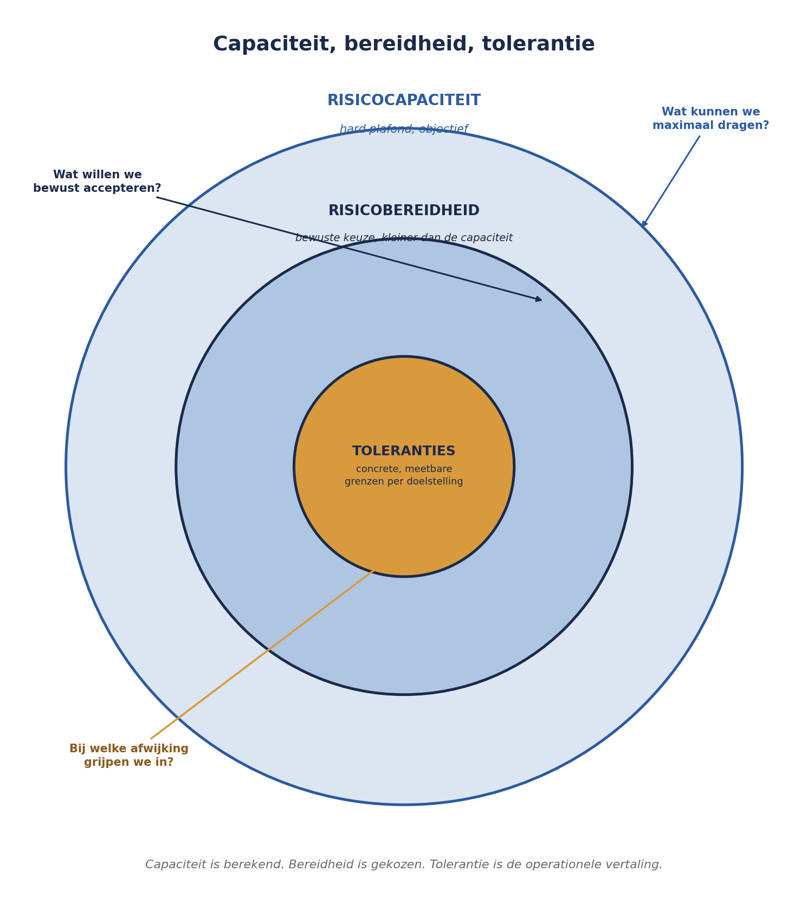

Deel 12 — Risicobereidheid, -capaciteit en toleranties
Niveau 2 — Professional · Reader
12.0 Vijf projecten, vijf stiltes
Sanne Bakhuis vraagt de vijf projectmanagers van het Mutatieplatform-programma naar hun risicobereidheid. Ze krijgt vijf verschillende antwoorden, en geen daarvan is eigenlijk een antwoord.
De projectmanager van Werkgeversportaal zegt: “We zijn best voorzichtig, denk ik.” De projectmanager van Verwerkingsengine zegt: “We proberen risico’s te vermijden waar het kan.” De projectmanager van Datakwaliteit en Opschoning — het project met misschien wel het hoogste risicoprofiel, gezien de gevoeligheid van historische deelnemersdata — zegt niets specifieks, want daar is nooit over nagedacht.
Dit is geen falen van de vijf projectmanagers. Het is een falen van het programma: er is nooit een risicobereidheid vastgesteld die zij konden overnemen. Dit deel lost dat op, en werkt uit wat in niveau 1 (deel 3) nog maar een grove, verbale eerste stap was.
12.1 Drie begrippen, drie vragen
Risicobereidheid (risk appetite) is een bestuurlijke, kwalitatieve uitspraak over hoeveel en welk type risico een organisatie of programma bereid is te accepteren om haar doelstellingen te bereiken. Het antwoordt op de vraag: waarom accepteren we bepaald risico wel en ander risico niet?
Risicocapaciteit (risk capacity) is het objectieve maximum aan risico dat een organisatie kan dragen zonder haar voortbestaan, reputatie of wettelijke positie in gevaar te brengen — een harde grens, geen keuze. Het antwoordt op de vraag: wat kunnen we maximaal dragen, los van wat we willen?
Risicotolerantie (risk tolerance), zoals in deel 8 (niveau 1) geïntroduceerd, is de operationele, meetbare bandbreedte per doelstelling waarbinnen afwijking geen escalatie vereist. Het antwoordt op de vraag: bij welke concrete afwijking grijpen we in?
De verhouding tussen de drie is hiërarchisch en niet uitwisselbaar: risicocapaciteit is het buitenste, harde plafond; risicobereidheid is een bewuste, meestal voorzichtiger keuze daarbinnen; toleranties zijn de operationele vertaling van die bereidheid naar concrete, meetbare grenzen per project of doelstelling.

Een veelgemaakte fout is risicobereidheid en risicocapaciteit gelijk te stellen. Een organisatie kan een grote capaciteit hebben (financieel gezond, goed gekapitaliseerd) en toch een lage bereidheid kiezen (voorzichtig, om reputatieredenen) — of omgekeerd, een beperkte capaciteit hebben en toch, onder druk, een hogere bereidheid tonen dan verantwoord is. Dat laatste is precies het patroon dat in niveau 3 (deel 24) bij strategisch risico wordt onderzocht.
12.2 Van boardroom-taal naar tolerantie
Risicobereidheid wordt meestal in kwalitatieve, bestuurlijke taal geformuleerd — en dat is op zichzelf geen fout. Het probleem ontstaat als die taal nooit wordt vertaald.
Kernzin 7 van de cursus: risicobereidheid zonder vertaling naar tolerantie is een mooie zin op een poster — ze verandert niets aan wat iemand morgen beslist.
Voor het Mutatieplatform-programma stelt de Sponsoring Group, op voordracht van Sanne, een risicobereidheid-verklaring vast in vier regels:
- “Wij accepteren vertraging in individuele projecten tot vier weken, zolang het programmadoel (doorlooptijdhalvering per 1 januari volgend jaar) niet in gevaar komt.”
- “Wij accepteren geen enkel risico dat de juistheid van deelnemersgegevens in gevaar brengt, in geen van de vijf projecten.”
- “Wij zijn bereid meerkosten tot €500.000 op programmaniveau te accepteren om de doorlooptijd van het programma te bewaken.”
- “Wij zijn terughoudend met risico’s die de relatie met werkgevers als klant kunnen schaden, ook als de financiële impact daarvan beperkt is.”
Elke regel wordt vervolgens vertaald naar concrete toleranties per project — dat is de vertaalslag die Kernzin 7 vereist. Regel 2 bijvoorbeeld wordt voor Project 5 (Datakwaliteit en Opschoning) een tolerantie van nul op elke afwijking in de opschoning van deelnemersdata, terwijl diezelfde regel voor Project 1 (Werkgeversportaal) vertaalt naar een tolerantie van nul op elke validatiefout in het portaal die tot onjuiste gegevensinvoer kan leiden. Dezelfde bereidheid, twee verschillende, project-specifieke toleranties.
12.3 Risicobereidheid programma versus project
Dit is de vraag die zowel in de goedgekeurde opzet van deze cursus als in PM-cursus deel 18 expliciet is aangestipt, en die nu een antwoord krijgt: kan een programma een andere risicobereidheid hebben dan de optelsom van zijn projecten?
Het antwoord is ja, en de reden is fundamenteel: een programma heeft doelstellingen die geen van de individuele projecten alleen draagt. De doorlooptijdhalvering is geen doelstelling van Project 2 (Verwerkingsengine) alleen, noch van Project 1 (Werkgeversportaal) alleen — ze is het product van hun samenwerking. Dat betekent dat de programma-risicobereidheid soms strenger moet zijn dan wat elk project afzonderlijk zou kiezen: een risico dat voor Project 2 op zichzelf aanvaardbaar lijkt (bijvoorbeeld twee weken vertraging), kan op programmaniveau onaanvaardbaar zijn als diezelfde twee weken de geplande integratietest met Project 1 blokkeren en daarmee een cascade-effect veroorzaken.
Omgekeerd kan de programma-risicobereidheid op sommige punten ook ruimer zijn dan een individueel project zou kiezen: Project 5 (Datakwaliteit) zou, op zichzelf beoordeeld, wellicht liever meer tijd nemen voor grondige opschoning. Op programmaniveau kan de Sponsoring Group besluiten dat enige onvolkomenheid in historische data acceptabel is, zolang de nieuwe mutaties vanaf de livegang correct zijn — een andere afweging dan Project 5 in isolatie zou maken.
Dit spanningsveld — programma soms strenger, soms ruimer dan de som van de projecten — is precies waarom risicobereidheid niet top-down kan worden opgelegd zonder overleg, en niet bottom-up kan worden opgeteld zonder sturing. Het vereist een expliciet gesprek, gefaciliteerd door de programma-risicomanager, tussen de programmadoelstellingen en de projectrealiteit.
12.4 Risicocapaciteit: het harde plafond
Waar risicobereidheid een keuze is, is risicocapaciteit een gegeven — al vraagt het vaststellen ervan wel degelijk analyse. Voor Meridiaan als geheel wordt de risicocapaciteit mede bepaald door factoren die buiten het Mutatieplatform-programma liggen: de solvabiliteitspositie van de verzekeraar, de wettelijke buffervereisten, en de reputatieschade die een grootschalig datalek zou veroorzaken bij een organisatie die deelnemersgegevens van honderdduizenden mensen beheert.
Voor een programma is het praktisch zelden nodig om een eigen, volledig aparte risicocapaciteit vast te stellen — die is doorgaans een afgeleide van de capaciteit van de organisatie als geheel. Wat wél relevant is op programmaniveau: weet welke van de vastgestelde toleranties in de buurt komen van de organisatiebrede capaciteit, in plaats van “slechts” de programma-bereidheid te raken. Regel 2 uit de risicobereidheid-verklaring (deelnemersgegevens) is zo’n grens: een grootschalige datakwaliteitscrisis zou niet alleen de programma-bereidheid overschrijden, maar mogelijk ook de organisatiebrede risicocapaciteit raken — en dat verandert wie er bij escalatie aan tafel hoort (terug naar de escalatieladder uit deel 8, niveau 1, die bij zo’n overschrijding rechtstreeks naar het hoogste niveau zou moeten springen).
12.5 Sanne’s oefening: vijf toleranties, één bereidheid
Met de risicobereidheid-verklaring uit 12.2 als uitgangspunt, laat Sanne elk van de vijf projectmanagers hun eigen toleranties herzien. Het resultaat legt drie inconsistenties bloot die zonder deze oefening onopgemerkt zouden zijn gebleven:
Project 1 en Project 4 gebruikten verschillende definities van “meerkosten”. Project 1 rekende alleen directe projectkosten, Project 4 rekende ook indirecte kosten (bijvoorbeeld tijdelijk ingehuurde capaciteit) mee. Voor de programma-brede tolerantie van €500.000 (regel 3) moet dit worden geharmoniseerd, anders is optellen zinloos — precies de vergelijkbaarheidseis uit deel 11.
Project 5 had helemaal geen tolerantie voor datakwaliteit vastgesteld, ondanks dat dit project het risico bij uitstek draagt waar regel 2 van de bereidheid-verklaring over gaat. Dit wordt onmiddellijk als eerste prioriteit opgepakt.
Project 2’s eigen tolerantie voor vertraging (zes weken) was ruimer dan de programmabereidheid (vier weken, regel 1) toestond. Dit is een direct conflict, en het wordt opgelost door Project 2’s tolerantie te verkleinen tot vier weken, met een aantekening waarom: de doorlooptijd van Project 2 is een kritiek pad voor het hele programmadoel.

Samenvatting van deel 12
- Drie begrippen, hiërarchisch: risicocapaciteit (hard plafond, objectief), risicobereidheid (bewuste keuze binnen dat plafond, kwalitatief), risicotolerantie (operationele, meetbare vertaling per doelstelling).
- Kernzin 7: risicobereidheid zonder vertaling naar tolerantie is een mooie zin op een poster — ze verandert niets aan wat iemand morgen beslist.
- Een programma kan een andere risicobereidheid hebben dan de optelsom van zijn projecten: soms strenger (vanwege afhankelijkheden tussen projecten), soms ruimer (vanwege een andere afweging op programmaniveau).
- Risicocapaciteit is meestal een afgeleide van de organisatie als geheel, niet van het programma apart; relevant is te weten welke toleranties in de buurt van die organisatiebrede grens komen.
- Vijf projecten met impliciete, ongecoördineerde toleranties leiden tot inconsistenties (verschillende definities, ontbrekende toleranties, tegenstrijdige grenzen) die pas zichtbaar worden als je ze naast elkaar legt.
Vooruitblik
Deel 13 gebruikt de nu geharmoniseerde toleranties en de vastgestelde risicobereidheid als basis voor identificatie op programmaschaal: welke risico’s ontstaan niet binnen één project, maar juist in de ruimte ertussen — en welke technieken uit deel 4 (niveau 1) daarvoor moeten worden aangepast.